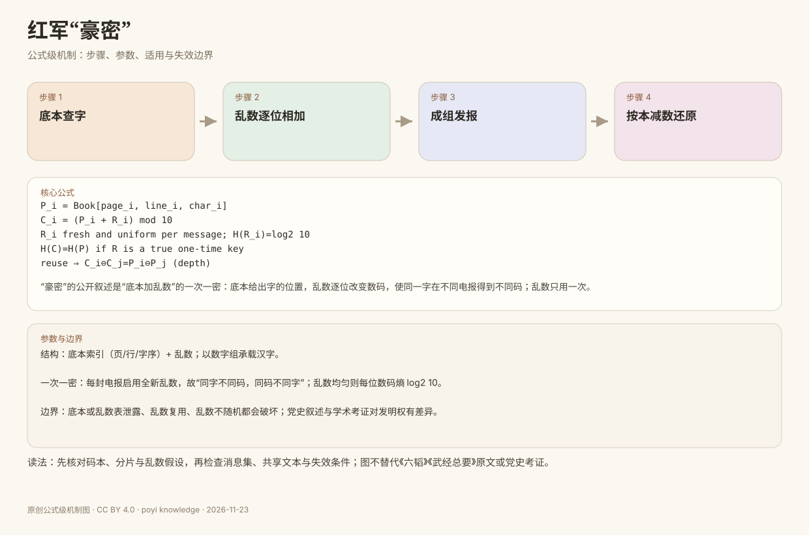

原理与机制
中国密码史：红军"豪密"（Red Army "Hao Mi" Cipher）。### 底本加乱数
“豪密”被党史叙述为“底本加乱数”的一次一密体制：底本是一本共享的书或字表，给出某字的位置（书名/册码、页码、行数、字序）；乱数是逐位随机数字，把底本索引变成新的数码。分析模型可写作 P_i=Book[page_i,line_i,char_i]，C_i=(P_i+R_i) mod 10。### 为什么“同字不同码”
若 R_i 每封电报都重新取均匀随机数字，则同一 P_i 在不同电报得到不同 C_i；每个乱数位的熵为 log2 10≈3.32 bit，整段密钥的熵随位数线性增长。只要 R 真随机且只用一次，C 不泄露 P 的统计结构；若 R 复用，则 C_i⊖C_j=P_i⊖P_j，重新出现深度攻击的条件。

为什么重要
“豪密”把一次一密的条件落到可执行的纸笔流程：底本负责汉字索引，乱数负责每报更新。它说明 OTP 的安全不是“有随机数”四个字，而是“随机、等长、只用一次、保密”四条同时成立。
应用与实例
1.收发双方各持同一底本与乱数表，底本按页/行/字序索引。2.把明文汉字转成底本索引，再与乱数逐位相加。3.每封电报使用全新乱数，绝不跨报复用。4.收方按同一乱数逐位相减，回到索引，再查底本。5.严格管理底本、乱数表与译电人员，定期更换。### 不能怎么用
不能把“有乱数”当成 OTP；不能复用同一页乱数；不能用伪随机或短周期乱数；不能忽略底本被缴获；不能把党史回忆当成全部技术细节。
边界与攻击面
1.乱数复用：两报相减消去乱数，出现深度。2.乱数不随机：频率、偏差与重复让统计攻击可行。3.底本泄露：知道页码/行/字序即可还原索引。4.乱数表管理失败：抄件、丢失、内部人员叛变都会破坏。5.体制错误：不同部队使用不同底本或乱数页会造成无法通联。
历史与背景
1930年11月香港电台被破坏后，周恩来着手编制更高级的无线电密码；1931年3月任弼时把“豪密”带到中央苏区，1931年9月15日夜上海党中央与苏区首次通联，第一份电报问“任弼时是否到达中央苏区”。此后“豪密”用于全党全军高层通信，党史叙述称直到1949年未被国民党破译。“豪密”的具体编制者与底本仍有考证争议：2014年《“豪密”考》对“周恩来个人发明”与“圣经底本”提出保留，2021年人民网党史文章则采用周恩来编制说。该条目并列保留两种叙述，把可核事实限定在时间、使用范围、一次一密特点与未被破译的党史记载。
时间线、证据与争议
登记年份为 1931；背景是破译方法中此前技术、机构与冲突的累积；过程只写有来源支持的参与者、地点与行动；结果写它改变了哪些标准、机器、课程或政策；争议写二手叙述与一手材料的差距。来源包括：Wikipedia search entry for 红军"豪密"；《密码简史：穿越远古 展望未来》（杨义先、钮心忻，电子工业出版社，2020，ISBN 9787121398711）。
不要把“发生过”写成“已证明”，也不要把事件标题扩写成机制结论；没有日期的节点只作逻辑位置。
同名概念的分界
红军"豪密"只对自身登记对象负责。与相邻条目的名称可能重叠，该条目不把别条的事实并入，也不用一个版本来覆盖另一个版本。
遇到同名对象时先查三项：类型（人物/事件/器物/术语）、时间、来源机构；三项不能同时对上，就当作不同条目处理。
逐步示例与核验
事件时间线模型
背景 → 过程 → 结果 → 争议。背景写此前技术/制度；过程写可核参与者与时间；结果写后续标准、机器、课程或政策；争议写二手叙述与一手材料的差距。
参考出处
- Wikipedia search entry for 红军"豪密". https://zh.wikipedia.org/w/index.php?search=%E7%BA%A2%E5%86%9B%22%E8%B1%AA%E5%AF%86%22
- 《密码简史：穿越远古 展望未来》（杨义先、钮心忻，电子工业出版社，2020，ISBN 9787121398711）. https://book.cppinfo.cn/Encyclopedias/home/index?id=3730464